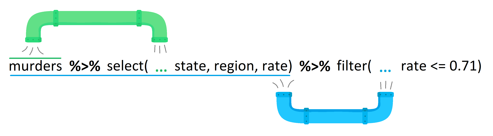
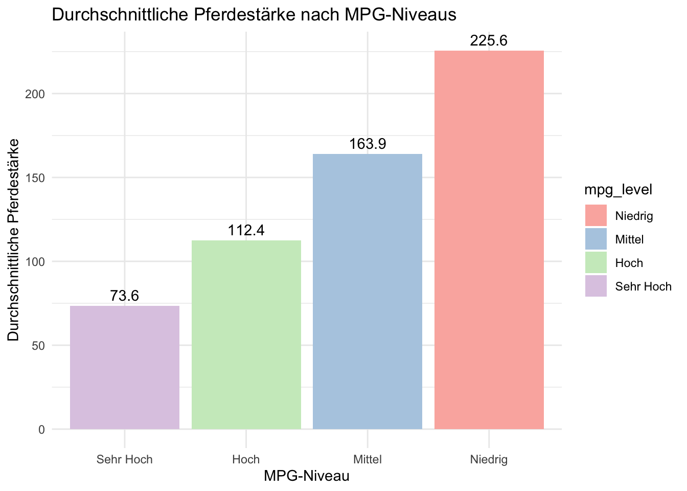

6 Datenbereinigung
Beabsichtigte Lernergebnisse
- Daten auswählen und filtern können, um Relevanz sicherzustellen
- Neue Spalten erstellen und bestehende bearbeiten können
- Mit fehlenden Daten umgehen können
Laden Sie das Daten-Transformation Cheat Sheet herunter.
6.1 Data Cleaning
Im letzten Kapitel haben wir das Tidy DataKonzept kennengelernt. Sind die Daten erst mal in einem tidy Format, gestaltet sich die Datenanalyse wesentlich einfacher. Leider kann es oft eine Weile dauern, bis man an diesem Punkt ankommt. Deshalb beschäftigen wir uns in diesem Kapitel mit der Datenbereinigung und Funktionen, die dabei hilfreich sind. Wir verwenden dabei vor allem die folgenden Funktionen aus dem tidyverse: select, filter, arrange, mutate, summarise und group_by.
Diese Funktionen werden am häufigsten für die Datenreinigung verwendet. Das dplyr package aus dem tidyverse beinhaltet jedoch noch viel mehr Funktionen, die speziell für die Datenbereinigung äusserst nützlich sind. Das Daten-Transformation Cheat Sheet gibt einen guten Überblick über die wichtigsten Funktionen. Am besten laden Sie dieses dirket herunter, schauen es kurz an und halten es für den Rest des Semseters zur Hand.
6.2 Der Pipe Operator
Bevor wir beginnen, schauen wir uns den Pipe Operator an: %>%. Wie in der Abbildung unten dargestellt gibt der pipe Operator den Output einer Funktion an die nächste Funktion weiter, die diesen Output als ersten Input verwendet.
Dies ermöglich es, Funktionen auf einfache und leserliche Weise zu verknüpfen:
| mpg | cyl | wt | |
|---|---|---|---|
| Honda Civic | 30.4 | 4 | 1.615 |
| Lotus Europa | 30.4 | 4 | 1.513 |
Somit können wir verschachtelte Funktionen vermeiden:
| mpg | cyl | wt | |
|---|---|---|---|
| Honda Civic | 30.4 | 4 | 1.615 |
| Lotus Europa | 30.4 | 4 | 1.513 |
Die erste Schreibweise ist deutlich einfacher zu lesen, oder? Wie im Beispiel unten zu sehen, kommt man dadurch relativ einfach und leserlich von den Rohdaten über Datentransformationen bis hin zur Datenvisualisierung, alles in einer pipe.
# Umfangreiche Pipe-Operation mit mtcars-Daten, die in einem ggplot endet
mtcars %>%
rownames_to_column("car_name") %>% # Konvertiere Zeilennamen in eine Spalte
mutate(mpg_level = cut(mpg, breaks = quantile(mpg, probs = 0:4/4), include.lowest = TRUE, labels = c("Niedrig", "Mittel", "Hoch", "Sehr Hoch"))) %>% # Erstelle MPG-Niveaus
group_by(mpg_level) %>% # Gruppiere nach dem neu erstellten MPG-Niveau
summarise(
avg_hp = mean(hp), # Berechne die durchschnittliche Pferdestärke für jedes Niveau
avg_wt = mean(wt) # Berechne das durchschnittliche Gewicht für jedes Niveau
) %>%
ungroup() %>% # Entferne die Gruppierung
ggplot(aes(x = reorder(mpg_level, avg_hp), y = avg_hp, fill = mpg_level)) + # Erstelle ein Balkendiagramm
geom_col() + # Verwende Balken zur Darstellung der Daten
geom_text(aes(label = round(avg_hp, 1)), vjust = -0.5) + # Füge Textbeschriftungen über den Balken hinzu
labs(
title = "Durchschnittliche Pferdestärke nach MPG-Niveaus",
x = "MPG-Niveau",
y = "Durchschnittliche Pferdestärke"
) +
theme_minimal() + # Verwende ein minimales Thema
scale_fill_brewer(palette = "Pastel1") # Färbe die Balken mit einer Pastellpalette
Für dieses Kapitel verwenden wir einen selbst generierten Datensatz bestehend aus den Verkäufen, Ausgaben und der Zufriedenheit für zwei Jahre aus vier Regionen und zwei Produkten. Der Code der die Daten generiert stammt aus [diese] (https://psyteachr.github.io/ads-v3/04-summary.html#sec-pipes-first) Buchkapitel. Der für die Datengenerierung verwendete Code ist für sie nicht relevant.
Wie bereits besprochen lohnt es sich immer, die Daten als erstes kurz anzuschauen:
| region | product | sales_2019 | sales_2020 | expenses_2019 | expenses_2020 | satisfaction_2019 | satisfaction_2020 |
|---|---|---|---|---|---|---|---|
| North | widgets | 2129 | -517 | 822 | -897 | high | very high |
| North | gadgets | 723 | 77 | 1037 | 1115 | very high | very high |
| South | widgets | 1123 | -1450 | 1004 | 672 | high | neutral |
| South | gadgets | 2022 | -945 | -610 | 200 | low | low |
| East | widgets | -728 | -51 | -801 | -342 | very low | very low |
| East | gadgets | -423 | -354 | 94 | 2036 | neutral | high |
| West | widgets | 633 | 790 | 783 | -315 | neutral | neutral |
| West | gadgets | 1204 | 426 | 433 | -136 | low | low |
Nun können wir mit dem Data Cleaning beginnen. Oft müssen wir zuerst den Datensatz einschränken, das heisst wir beschränken uns auf bestimmte Varialben (Spalten) und Beobachtungen (Zeilen). Dafür verwenden wir die Funktionen select und filter.
6.2.1 Spalten auswählen mit select
Mit select kann man Variablen auswählen. Dies ist nützlich, wenn wir nur einen Teil der Variablen für unsere Auswertung brauchen, was häufig der Fall ist. Es gibt verschiedene Arten, wie man das mit der select Funktion tun kann:
| product |
|---|
| widgets |
| gadgets |
| widgets |
| gadgets |
| widgets |
| gadgets |
| widgets |
| gadgets |
| product |
|---|
| widgets |
| gadgets |
| widgets |
| gadgets |
| widgets |
| gadgets |
| widgets |
| gadgets |
Natürlich wollen wir oft mehr als nur eine Spalte auswählen:
| product | sales_2019 | expenses_2019 |
|---|---|---|
| widgets | 2129 | 822 |
| gadgets | 723 | 1037 |
| widgets | 1123 | 1004 |
| gadgets | 2022 | -610 |
| widgets | -728 | -801 |
| gadgets | -423 | 94 |
| widgets | 633 | 783 |
| gadgets | 1204 | 433 |
Um viele Spalten auf einmal auszuwählen, ist die Doppelpunktnotation hilfreich. Dadurch werden alle Variablen die sich zwischen den beiden spezifizierten Variablen befinden ausgewählt:
| region | product | sales_2019 | sales_2020 | expenses_2019 | expenses_2020 |
|---|---|---|---|---|---|
| North | widgets | 2129 | -517 | 822 | -897 |
| North | gadgets | 723 | 77 | 1037 | 1115 |
| South | widgets | 1123 | -1450 | 1004 | 672 |
| South | gadgets | 2022 | -945 | -610 | 200 |
| East | widgets | -728 | -51 | -801 | -342 |
| East | gadgets | -423 | -354 | 94 | 2036 |
| West | widgets | 633 | 790 | 783 | -315 |
| West | gadgets | 1204 | 426 | 433 | -136 |
6.2.1.1 Spalten abwählen
Wenn man nur einige Spalten ausschliessen möchte kann es einfacher sein, diese abzuwählen als alle andere auszuwählen. Dies können wir tun, indem wir ein - vor die abzuwählende Variable setzen.
# einzelne Spalten abwählen
budget %>% select(-expenses_2019, -expenses_2020)
# einen Bereich von Spalten abwählen
budget %>% select(-(expenses_2019:expenses_2020))| region | product | sales_2019 | sales_2020 | satisfaction_2019 | satisfaction_2020 |
|---|---|---|---|---|---|
| North | widgets | 2129 | -517 | high | very high |
| North | gadgets | 723 | 77 | very high | very high |
| South | widgets | 1123 | -1450 | high | neutral |
| South | gadgets | 2022 | -945 | low | low |
| East | widgets | -728 | -51 | very low | very low |
| East | gadgets | -423 | -354 | neutral | high |
| West | widgets | 633 | 790 | neutral | neutral |
| West | gadgets | 1204 | 426 | low | low |
| region | product | sales_2019 | sales_2020 | satisfaction_2019 | satisfaction_2020 |
|---|---|---|---|---|---|
| North | widgets | 2129 | -517 | high | very high |
| North | gadgets | 723 | 77 | very high | very high |
| South | widgets | 1123 | -1450 | high | neutral |
| South | gadgets | 2022 | -945 | low | low |
| East | widgets | -728 | -51 | very low | very low |
| East | gadgets | -423 | -354 | neutral | high |
| West | widgets | 633 | 790 | neutral | neutral |
| West | gadgets | 1204 | 426 | low | low |
6.2.1.2 Hilfsfunktionen zum Auswählen
Schließlich können Sie Spalten basierend auf Kriterien über die Spaltennamen auswählen.
| Funktion | Definition |
|---|---|
starts_with() |
wähle Spalten, die mit einer Zeichenkette beginnen |
ends_with() |
wähle Spalten, die mit einer Zeichenkette enden |
contains() |
wähle Spalten, die eine Zeichenkette enthalten |
num_range() |
wähle Spalten, deren Name dem Muster prefix entspricht |
6.2.2 Todo
6.2.3 Filtern
Oft ist man auch nur an bestimmten Beobachtungen (Zeilen) interessiert. Diese können wir mit der filter() Funktion auswählen. Man kann dabei nach einem oder mehreren Kriterien filtern. Dabei kommen logische Operatoren, wie wir sie bereits besprochen haben, zum Einsatz. Zum Beispiel können wir nur die Beobachtungen auswählen, die aus der Region “North” kommen:
| region | product | sales_2019 | sales_2020 | expenses_2019 | expenses_2020 | satisfaction_2019 | satisfaction_2020 |
|---|---|---|---|---|---|---|---|
| North | widgets | 2129 | -517 | 822 | -897 | high | very high |
| North | gadgets | 723 | 77 | 1037 | 1115 | very high | very high |
Die Auswahl passiert hierbei über die logische Operation region == "North". Dieses Statement generiert einen Vektor aus TRUE und FALSE Werten, über die die Auswahl der Zeilen stattfindet:
Mann kann dabei verschiedene logische Operatoren verwenden:
# wähle alle Zeilen aus, bei denen die Region Nord entspricht
budget %>% filter(region == "North")
# wähle alle Zeilen aus, bei denen die Ausgaben 2020 genau 200 betrugen
budget %>% filter(expenses_2020 == 200)
# wähle alle Zeilen aus, bei denen der Verkauf 2019 mehr als 100 betrug
budget %>% filter(sales_2019 > 100)
# alles außer dem Norden
budget %>% filter(region != "North")
Warning
Denken Sie daran, == und nicht = zu verwenden, um zu überprüfen, ob zwei Dinge gleichwertig sind. Ein einzelnes = weist den Wert rechts der Variablen links zu (ähnlich wie der Operator <-).
Man kann auch mehrere Kriterien auf einmal spezifizieren. Dies kann man auf zwei verschiedene Arten tun. Werden die Statements mit einem , oder & getrennt, werden nur die Zeilen ausgewählt, die alle Bedingungen erfüllen. So können wir zum Beispiel Zeilen auswählen, die im Jahr 2019 und 2020 ausgaben über 100 hatten:
| region | product | sales_2019 | sales_2020 | expenses_2019 | expenses_2020 | satisfaction_2019 | satisfaction_2020 |
|---|---|---|---|---|---|---|---|
| West | widgets | 633 | 790 | 783 | -315 | neutral | neutral |
| West | gadgets | 1204 | 426 | 433 | -136 | low | low |
Dies ist eine sogenannte “und” Verknüpfung. Wir können auch eine “oder” Verknüpfung verwenden, dann werden alle Zeilen ausgewählt, die mindestens eine der Bedingungen erfüllen:
| region | product | sales_2019 | sales_2020 | expenses_2019 | expenses_2020 | satisfaction_2019 | satisfaction_2020 |
|---|---|---|---|---|---|---|---|
| North | widgets | 2129 | -517 | 822 | -897 | high | very high |
| North | gadgets | 723 | 77 | 1037 | 1115 | very high | very high |
| South | widgets | 1123 | -1450 | 1004 | 672 | high | neutral |
| South | gadgets | 2022 | -945 | -610 | 200 | low | low |
| West | widgets | 633 | 790 | 783 | -315 | neutral | neutral |
| West | gadgets | 1204 | 426 | 433 | -136 | low | low |
Um die Auswahl zu vereinfachen, wenn man nach mehreren Kriterien filtern will, gibt es den “Übereinstimmungsoperator” (%in%).
Abschliessend hier eine Übersicht mit den verschiedenen logischen Operatoren, die zum Filtern von Zeilen (Beobachtungen) verwendet werden können:
"Operator" |
Name | ist WAHR, wenn und nur wenn |
|---|---|---|
A < B |
kleiner als | A ist kleiner als B |
A <= B |
kleiner oder gleich | A ist kleiner oder gleich B |
A > B |
größer als | A ist größer als B |
A >= B |
größer oder gleich | A ist größer oder gleich B |
A == B |
Äquivalenz | A entspricht genau B |
A != B |
nicht gleich | A entspricht nicht genau B |
A %in% B |
in | A ist ein Element des Vektors B |
Warning
filter() ist unglaublich leistungsfähig und kann Ihnen ermöglichen, sehr spezifische Teilmengen von Daten auszuwählen. Aber es ist auch ziemlich gefährlich, denn wenn Sie mehrere Kriterien und Operatoren kombinieren, ist es sehr einfach, versehentlich etwas leicht anders zu spezifizieren, als Sie beabsichtigt haben. Überprüfen Sie immer Ihre Ausgabe. Wenn Sie einen kleinen Datensatz haben, können Sie ihn visuell überprüfen, um zu sehen, ob er richtig aussieht. Bei einem größeren Datensatz möchten Sie vielleicht Zusammenfassungsstatistiken berechnen oder die Anzahl der Gruppen/Beobachtungen in jeder Variablen zählen, um zu überprüfen, ob Ihr Filter korrekt ist. Es gibt kein Expertenniveau im Codieren, das das Wissen und die Überprüfung Ihrer Daten ersetzen kann.
6.2.4 Anordnen
Nachdem wir die gewünschten Spalten (select) und Zeilen (filter) ausgewählt haben, wollen wir die Daten eventuell noch sortieren. Dies kann zum Beispiel bei Paneldaten sinnvoll sein. Sortieren kann auch für die Darstellung in Tabellen hilfreich sein. Wir können Daten nach den Werten in bestimmten Spalten mit arrange sortieren:
# Anordnen der Tabelle
# zuerst nach Region in alphabetischer Reihenfolge
# dann nach "product" in umgekehrter alphabetischer Reihenfolge (mit der Hilfsfunktion `desc`)
budget %>%
arrange(region, desc(product))| region | product | sales_2019 | sales_2020 | expenses_2019 | expenses_2020 | satisfaction_2019 | satisfaction_2020 |
|---|---|---|---|---|---|---|---|
| North | gadgets | 723 | 77 | 1037 | 1115 | very high | very high |
| North | widgets | 2129 | -517 | 822 | -897 | high | very high |
| South | gadgets | 2022 | -945 | -610 | 200 | low | low |
| South | widgets | 1123 | -1450 | 1004 | 672 | high | neutral |
| East | gadgets | -423 | -354 | 94 | 2036 | neutral | high |
| East | widgets | -728 | -51 | -801 | -342 | very low | very low |
| West | gadgets | 1204 | 426 | 433 | -136 | low | low |
| West | widgets | 633 | 790 | 783 | -315 | neutral | neutral |
6.2.5 Mutieren
Die Funktion mutate() ermöglicht es, neue Spalten hinzuzufügen oder bestehende zu ändern. Dies geschieht mit folgender Syntax: mutate(neue_Spalte = Berechnung). Es können auch mehrere neue Spalten in einem einzigen mutate Call generiert werden.Sobald eine neue Spalte erstellt wurde, kann diese in weiteren berechnungen innerhalb des selben mutate Calls verwendet werden. Zum Beispiel verwendet die Erstellung von profit unten die Spalte expenses, die darüber erstellt wird.
budget2 <- budget %>%
mutate(
sales = sales_2019 + sales_2020,
expenses = expenses_2019 + expenses_2020,
profit = sales - expenses,
region = paste(region, "Office")
)
budget2| region | product | sales_2019 | sales_2020 | expenses_2019 | expenses_2020 | satisfaction_2019 | satisfaction_2020 | sales | expenses | profit |
|---|---|---|---|---|---|---|---|---|---|---|
| North Office | widgets | 2129 | -517 | 822 | -897 | high | very high | 1612 | -75 | 1687 |
| North Office | gadgets | 723 | 77 | 1037 | 1115 | very high | very high | 800 | 2152 | -1352 |
| South Office | widgets | 1123 | -1450 | 1004 | 672 | high | neutral | -327 | 1676 | -2003 |
| South Office | gadgets | 2022 | -945 | -610 | 200 | low | low | 1077 | -410 | 1487 |
| East Office | widgets | -728 | -51 | -801 | -342 | very low | very low | -779 | -1143 | 364 |
| East Office | gadgets | -423 | -354 | 94 | 2036 | neutral | high | -777 | 2130 | -2907 |
| West Office | widgets | 633 | 790 | 783 | -315 | neutral | neutral | 1423 | 468 | 955 |
| West Office | gadgets | 1204 | 426 | 433 | -136 | low | low | 1630 | 297 | 1333 |
mutate() kann auch in Verbindung mit anderen Funktionen und Logischen Operatoren verwendet werden. Zum Beispiel können wir eine weitere Spalte zu budget2 hinzufügen, die angibt, ob in diesem Jahr ein Gewinn erzielt wurde, oder unsere product-Variable als Faktor überschreiben. Genau wie bei der Verwendung von Logischen Operatoren mit filter() wird die Gleichung ausgewertet und gibt TRUE oder FALSE zurück, je nachdem, ob die Beobachtung das Kriterium erfüllt.
Ist der neue Variablenname gleich wie der alte, wird die bestehende Variable überschrieben.
Im Zusammenhang mit mutate ist case_when eine sehr nützliche Funktion, um basierend auf einer Reihe von Bedingungen (logischen Statmements) eine neue Variable zu generieren. So können wir zum Beispiel den Gewinn in mehrere Kategorien einteilen:
budget2 %>%
mutate(profit_category = case_when(profit < 0 ~ "kein Gewinn",
profit > 100 ~ "kleiner Gewinn",
profit > 200 ~ "hoher Gewinn")) %>%
select(profit, profit_category)| profit | profit_category |
|---|---|
| 1687 | kleiner Gewinn |
| -1352 | kein Gewinn |
| -2003 | kein Gewinn |
| 1487 | kleiner Gewinn |
| 364 | kleiner Gewinn |
| -2907 | kein Gewinn |
| 955 | kleiner Gewinn |
| 1333 | kleiner Gewinn |
Falls für eine Beobachtung keine der Bedingungen zutrifft, generiert die Funktion den Wert NA. Dem müssen wir uns bewusst sein und wenn möglich Bedingugen generieren, die allen Werten einen neuen Wert zuweisen. Diese Bedingungen wären in diesem Fall sinnvoller:
budget2 %>%
mutate(profit_category = case_when(profit <= 0 ~ "kein Gewinn",
profit > 0 ~ "kleiner Gewinn",
profit > 100 ~ "mittlerer Gewinn",
profit > 200 ~ "hoher Gewinn")) %>%
select(profit, profit_category)| profit | profit_category |
|---|---|
| 1687 | kleiner Gewinn |
| -1352 | kein Gewinn |
| -2003 | kein Gewinn |
| 1487 | kleiner Gewinn |
| 364 | kleiner Gewinn |
| -2907 | kein Gewinn |
| 955 | kleiner Gewinn |
| 1333 | kleiner Gewinn |
Mann kann auch einen “default” Wert spezifizieren, den die Zeilen der neuen Spalte annehmen, falls keine andere Bedingung zutrifft:
6.2.6 Zusammenfassen
Die Funktion mutate generiert für jede bestehende Beobachtung einen neuen Wert. Oft wollen wir aber Berechnungen anstellen, die bestehende Werte zusammenfast. Dafür verwenden wir die Funktion summarise. Bevor wir Beispiele von summarise anschauen, bringen wir die Daten in ein tidy Format:
budget4 <- budget %>%
select(-satisfaction_2019, -satisfaction_2020) %>%
pivot_longer(cols = sales_2019:expenses_2020,
names_to = c("type", "year"),
names_sep = "_",
values_to = "value") %>%
pivot_wider(names_from = type,
values_from = value)
head(budget4) # Überprüfen Sie das Format| region | product | year | sales | expenses |
|---|---|---|---|---|
| North | widgets | 2019 | 2129 | 822 |
| North | widgets | 2020 | -517 | -897 |
| North | gadgets | 2019 | 723 | 1037 |
| North | gadgets | 2020 | 77 | 1115 |
| South | widgets | 2019 | 1123 | 1004 |
| South | widgets | 2020 | -1450 | 672 |
Jetzt können wir zum Beispiel Kennzahlen wie die durchschnittlichen Verkäufe und Ausgaben, sowie das Minimum und Maximum des Gewinnes berechnen:
budget4 %>%
summarise(
mean_sales = mean(sales),
mean_expenses = mean(expenses),
min_profit = min(expenses - sales),
max_profit = max(expenses - sales)
)| mean_sales | mean_expenses | min_profit | max_profit |
|---|---|---|---|
| 291.1875 | 318.4375 | -2632 | 2390 |
Wir sehen, dass summarise wie mutate funktioniert, jedoch mehrere Beobachtungen zu einer neuen, aggregierten, Beobachtung zusammenfasst.
Oft interessieren wir uns aber für solche Kennzahlen getrennt nach Gruppen. Zum Beispiel wäre es gut zu wissen, inwiefern sich die durchschnittlichen Verkäufe und Ausgaben nach Region unterscheiden. Dies können wir mit der group_by Funktion tun.
6.2.7 Gruppieren
Die Funktion group_by() nimmt bestehende Daten und wandelt sie in eine gruppierte Tabelle um, in der alle Berechnungen, die anschließend darauf ausgeführt werden, “nach Gruppe” durchgeführt werden. Schauen wir uns als erste an was passiert, wenn wir die group_by Funktion anwenden:
| region | product | year | sales | expenses |
|---|---|---|---|---|
| North | widgets | 2019 | 2129 | 822 |
| North | widgets | 2020 | -517 | -897 |
| North | gadgets | 2019 | 723 | 1037 |
| North | gadgets | 2020 | 77 | 1115 |
| South | widgets | 2019 | 1123 | 1004 |
| South | widgets | 2020 | -1450 | 672 |
| South | gadgets | 2019 | 2022 | -610 |
| South | gadgets | 2020 | -945 | 200 |
| East | widgets | 2019 | -728 | -801 |
| East | widgets | 2020 | -51 | -342 |
| East | gadgets | 2019 | -423 | 94 |
| East | gadgets | 2020 | -354 | 2036 |
| West | widgets | 2019 | 633 | 783 |
| West | widgets | 2020 | 790 | -315 |
| West | gadgets | 2019 | 1204 | 433 |
| West | gadgets | 2020 | 426 | -136 |
Wir sehen, dass der Datensatz nun nach den Variablen year und product gruppiert ist. Zudem sehen wir, dass es vier solcher Gruppen gibt. Alle nachfolgenden Berechnungen (z.B. mit summarise) werden nun separat nach diesen Gruppen durchgeführt. So werden zum Beispile die Mittelwerte getrennt nach diesen vier Gruppen berechnet:
year_prod <- budget4 %>%
group_by(year, product) %>%
summarise(
mean_sales = mean(sales
),
mean_expenses = mean(expenses),
min_profit = min(expenses - sales),
max_profit = max(expenses - sales)
) %>%
ungroup()`summarise()` has grouped output by 'year'. You can override using the
`.groups` argument.| year | product | mean_sales | mean_expenses | min_profit | max_profit |
|---|---|---|---|---|---|
| 2019 | widgets | 789.25 | 452.00 | -1307 | 150 |
| 2019 | gadgets | 881.50 | 238.50 | -2632 | 517 |
| 2020 | widgets | -307.00 | -220.50 | -1105 | 2122 |
| 2020 | gadgets | -199.00 | 803.75 | -562 | 2390 |
Damit die Daten nicht gruppiert bleiben, wenden wir zum Schluss noch d ie Funktion ungroup an die wie der Name sagt, die Gruppierung aufhebt.
Wir können die group_by Funktion auch mit anderen Funktionen, die wir bereits kennengelernt haben, verwenden. So können wir zum Beispiel pro Gruppe die Beobachtung mit dem grössten Verkaufsvolumen herausfiltern: